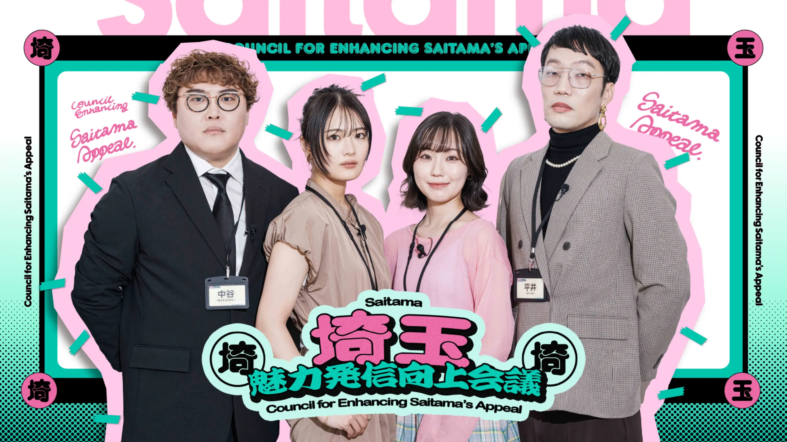

観光 / 埼玉
ちょこたび観光プロモーション


PROJECT INFORMATION
公式サイトを見る ↗（新しいタブで開く）埼玉県物産観光協会の観光プロモーション。埼玉の魅力を発信する取り組みです。
01 / 背景とテーマ
輪郭を与える
埼玉県物産観光協会の観光プロモーション。埼玉の魅力を発信する取り組みです。
02 / SCHEMAの担当範囲
全体を整える
SCHEMAの担当範囲は、観光プロモーションです。
03 / 取り組みの視点
枠組みをひらく
地域を訪れるきっかけを、どのように伝えるか。埼玉の魅力を観光の接点で届けることをテーマにしています。